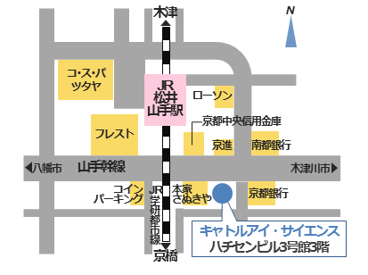

会社情報 Corporate Information
会社情報 - 目次
- 会社概要
- 沿革
- 代表挨拶
- アクセス
- 事業内容
- プライバシーポリシー
アクセス
本社
〒610-0354
京都府京田辺市山手南 2 丁目 1-3
ハチセンビル 3 号館 3 階 302
電話番号・FAX : 050-3356-9006

〒610-0354
京都府京田辺市山手南 2 丁目 1-3
ハチセンビル 3 号館 3 階 302
電話番号・FAX : 050-3356-9006